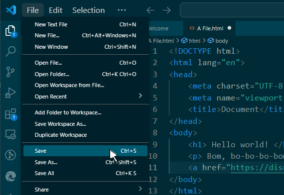

When clicking on a website, most people first expect to find words on whatever information they want to find.
So on this page, you'll learn a simple way to write headings and paragraphs for your website.
Before you start this lesson, make sure you already have a HTML file that you've created ready, like the file you would have created in Part 1. If you need help making this file, head to Part 1 to learn how to create a HTML file.
In order to go to Part 1, all you need to do is click Pt_1 on the top of the page, second on the nav bar.
Once you have finished, you may continue onwards.
First, open the HTML file. To check that your file is indeed a HTML file, take a look at the logo at the top. You should see 2 angle brackets.
When beginning with a empty HTML file, you should start by setting the file up, ready to display your website from any device. To do this, type '!' in your file, on Visual Studio Code. Underneath the line you are typping on, you should notice the '!________ Emmet Abbreviation' that the computer will suggest to you. Clicking on it will set up your website to fit any device.
Looking at the code, you should realise that most, if not all of the code is written in angle brackets, which is how HTML coding works.
The code '!DOCTYPE html' tells the computer what type of file it is. It's needed so the computer knows to run your program as a HTML.
The code 'html lang="en"' and '/html' tells a user what language the website is in. For different languages, there are different lang attributes. 'en' means English.
The code 'head' '/head' works to include all code that works to contain any and all information about the file itself. The code placed there doesn't show up as a visual thing on the website, but rather appears as how the document looks and others. An example would be fonts, background, color, etc.
The code 'meta charset="UTF-8"' works to display text and characters correctly and consistently, no matter what language it is or if you use special characters.
The code 'meta name="viewport" content="width=device-width, initial-scale=1.0"' works to display your website so that it fits on any device, without unnecessary zooming in/out.
The code 'title' and '/title>' tells the computer what title your website has. You can see the title when you have the website open by looking at the tab name. To change this title, make sure to write in the space between '
The code 'body' and '/body' works to include all code that will be visible on your website. This includes text, images, links and recordings.
Since this lesson is only about writing in particular, we'll only be codng within the space between 'body' and '/body'.
There are 6 types of headings. The largest heading you can use is h1, while the smallest heading you can use is h6.
To write using the headings, type 'h1'(Remember to type it inbetween < and >). If you want a different heading simply change the number. You should notice that the program has automatically added on '/h1' to your code.
Using 'h1' and '/h1', you can write your message between the two tags.
Pargraphs work the same as headings but only have one code to chose from. This code works best with paragraphed writing, although you can also use it for single sentences.
To write using the paragraph code, type 'p'(Remember to type it inbetween < and >). You should notice that the program has automatically added on '/p' to your code.
Using 'p' and '/p', you can write your message between the two tags.
Links work to be able to bring the user to a different source.
To link using the linking code, type 'a href=""'(Remember to type it inbetween < and >). You should notice that the program has automatically added on '/a' to your code.
You can place your link between the quotation marks and write your message in the space between the 'a href=""' and '/a' tags.
Breaks let you place your writing on a new line. This can allow you to make your website more readable and structured.
To write using the break code, type 'br'(Remember to type it inbetween < and >). Unlike the previous codes where the program has automatically added a closing tag to the end, the break code is an empty tag, which means that the code is self-contained and won't effect other elements, so it has no need for a closing tag to tell the computer when its effect stops.
The break code can be placed after a closing tag of any kind to make the text following after move to the next line. You can place multiple break codes after one another to have space between your information.
To test the results of your work, click on 'File' and click on 'Save'. Once this procedure is complete, head to the folder where your HTML file is stored and open it with a web browser that you use. From this, you should be able to see your website.
Once you're done, you'll have a HTML website with writing that, depending on the topic your website will be about, can have more or less writing about the subject you wish to talk about.
To learn about how to add photos to your website, click on Pt_3, fourth on the CSS Nav Bar.